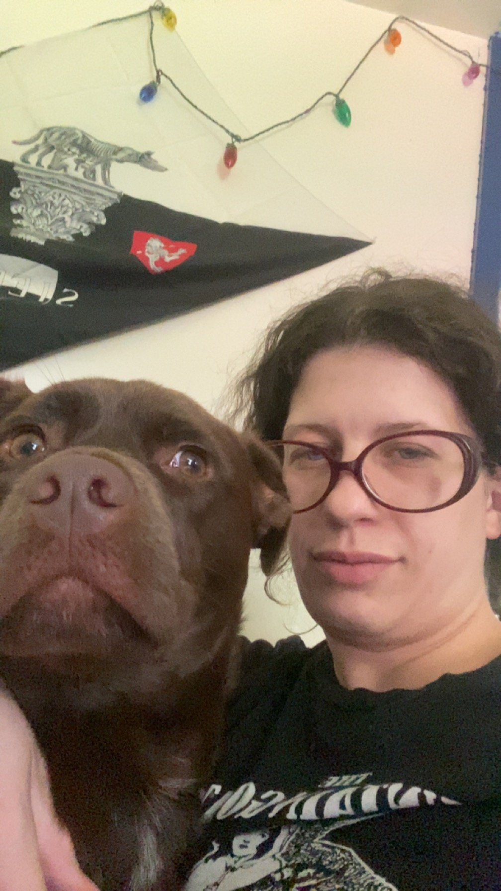

Cass Moore Resume

Summary
I am a hardworking and passionate learner who is easy to collaborate with.
Education
- Ithaca College - Bachelors of Arts, Environmental Critical Screen Studies (2013-2016)
Work Experience
- O’Connell Care at Home, Amherst, MA (June 2022 - February 2023)
- Assisted clients with daily living tasks, including household management and personal errands, enhancing clients’ comfort and quality of life.
- Hampshire College, Amherst, MA (August 2021 - January 2022)
- Maintained a high standard of cleanliness and organization across campus buildings, assisting with various facilities tasks.
- Black Sheep Deli, Amherst, MA (June 2018 - March 2020)
- Shift Supervisor responsible for overseeing a team of 3-7 employees per shift and ensuring smooth operations, including cash handling and customer satisfaction.
Skills
- Administrative Skills: Event planning, budget tracking, purchase processing, scheduling, and records management.
- Technical Proficiency: Adobe Photoshop, InDesign, WordPress, Google Workspace, Microsoft Office.
- Web Development: Currently learning front-end web development.
- Interpersonal & Communication: Strong verbal and written communication, customer service, and collaboration with diverse populations.
Contact
About